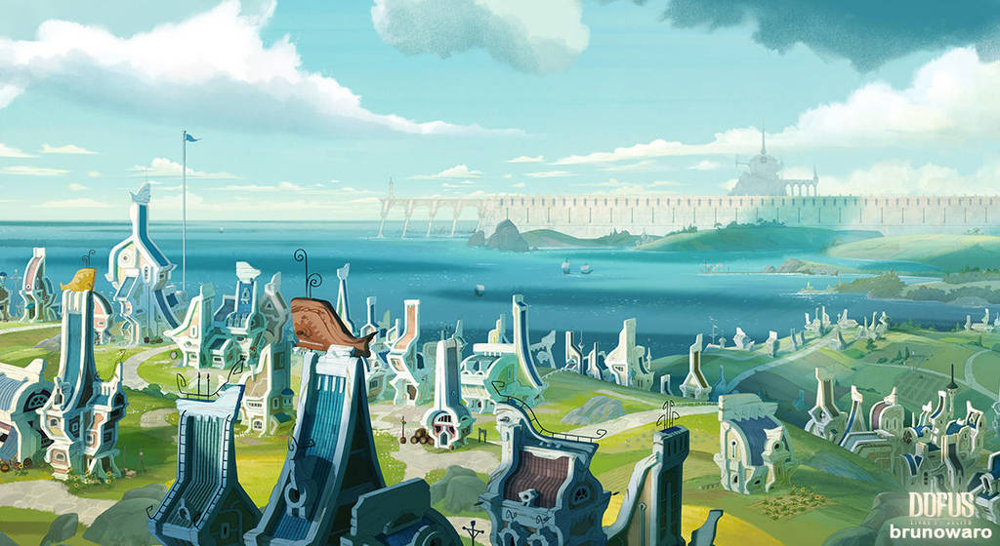
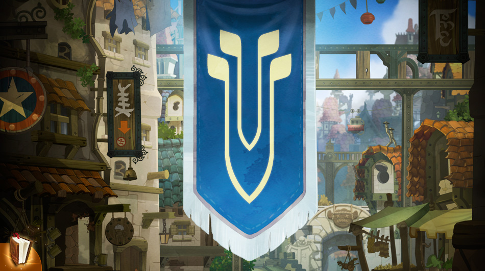

MAPA

GEOGRAFIA
Bonta se encuentra al noroccidente del continente amakneano, limitando con el Mar de Frigost por el norte y el occidente, y con la Planicie de Cania por el sur y oriente. La ciudad cuenta con una muralla con dos puertas principales, pero tambien es posible acceder mediante globo aeroestatico y el teletransportador principal.
IMPORTANCIA
La Ciudad de Bonta es una de las cuatro ciudades principales del continente Amakneano, junto a Astrub, Brakmar y Sufokia. Bonta es conocida por su fuerte milicia, su economia creciente y su defensa de los principios de honor, justicia y fortaleza grupal.